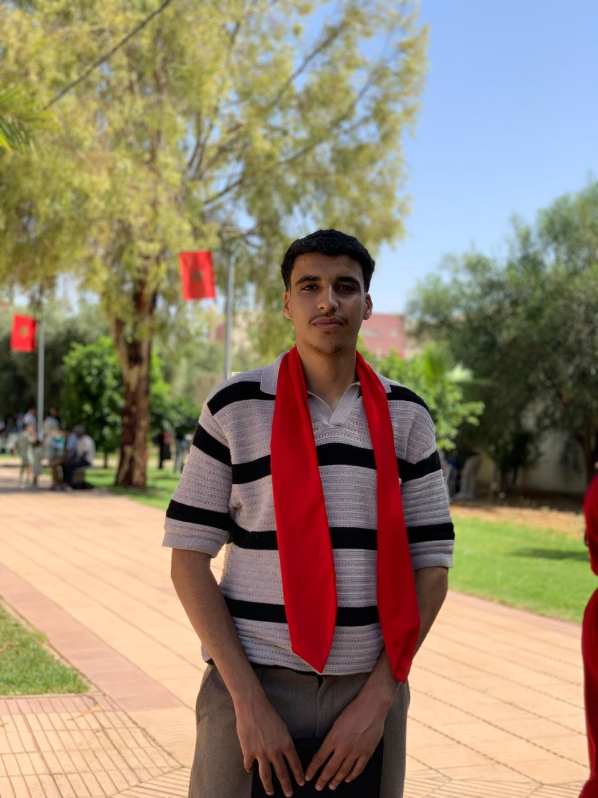

À propos

Je suis passionné par l'analyse de données et les technologies innovantes. Mes domaines de prédilection incluent le développement web, la data science, le deep learning et la computer vision.
Compétences
- Développement Web (HTML, CSS, JavaScript, PHP, SQL)
- Data Science et Analyse de données
- Big Data et Cloud Computing
- Deep Learning et Computer Vision
Formations / Expériences
| Année | Formation / Expérience |
|---|---|
| 2022 – 2023 | Baccalauréat en Sciences Physiques, Lycée Qualifiant Al Majd, Agadir |
| 2023 – 2025 | Informatique Décisionnelle et Statistique, École Supérieure de Technologie, Fquih Ben Salah |
| 2025 – 2026 | Big Data et Cloud Computing, ENSET-M |
| 01/08/2024 – 31/08/2024 | CELESDEV | Développeur Web : Développement d’un site vitrine pour Business Trust (HTML, CSS, JS, PHP, SQL) |
| 01/07/2024 – 15/07/2024 | MEDIA TELECOM | Développeur Web : Captive portal pour l’authentification des utilisateurs réseau |
| 15/04/2025 – 15/06/2026 | Stage Appbase | Projets en Computer Vision |